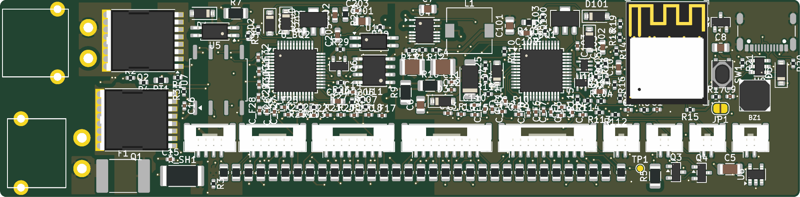
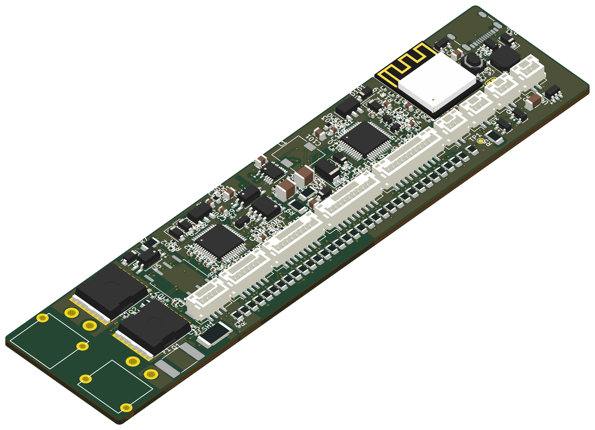
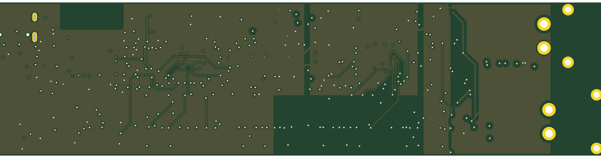

Coating or spacing?
Rev A meets IPC-2221B spacing only if the board is conformal-coated. Is coating acceptable for a pack-mounted board, or should the dense areas be re-spaced to 0.6 mm by hand?
Update · November 17, 2026
QFBMS is a 32-series, charge-only battery management board for an RS50 pack: two TI BQ76952 monitors, an ESP32-C3 running the VESC Express VBMS32 firmware, and a charge switch. The old board had stalled, so rev A starts again from the datasheets on the same outline, keeping the connectors and the 33 balance resistors exactly where they were. The method came from the testing-BMS-designs work: one circuit table generates the schematic, every part carries a written purpose, and kicad-cli checks every step. Rev A is placed and routed on four layers, and 4 connections are still open. It's a guess-and-check design meant to generally work, not a board to order yet.

01 / Progress
A placer puts each part next to what it connects to, inside its voltage domain: the upper monitor and its parts stay between x 41 and 63 mm, everything ground-referenced outside. The buck's input capacitors and catch diode were placed by hand right under the LTC7138. Freerouting did the bulk on four layers, with the second layer split into a ground plane and a CELL16 plane under the upper monitor. Shaped copper pours carry the charge current from the charger plug through both FETs and the fuse to the pack plug, and back through the shunt on the bottom layer. A small grid router written for this board closed most of what was left: the buck's supply lead, the far divider resistor and the charge path. Four connections are open, plus 7 small DRC items. Work stopped there on purpose.
At 134 V, IPC-2221B asks for 0.6 mm between bare outer-layer nets more than 30 V apart. The autorouter can't follow a voltage-dependent rule; we tried teaching it with class-to-class rules and it ignored them. Rev A therefore assumes a conformal coating (IPC-2221B B4: 0.13 mm up to 150 V). The pack-level nets (charge path, buck input and switch node, FET gate) still keep 0.6 mm through their own net classes. Uncoated, about 280 places would need re-routing.
Everything comes from one circuit table: the schematic, the BOM and the board nets. kicad-cli checks all 562 pins against the table, and ERC has no errors. Two old mistakes are gone: the BQ76952's charge-pump pin CP1 was shorted to BAT, and its footprint had an exposed pad the chip doesn't have. Everything on the old board without a job in rev A was removed, and each removal is written down.
The ADBMS1818 slave project taught the working method, but not a chip swap. The supplied VBMS32 firmware only talks to BQ76952s, and a linear regulator from a 67–134 V stack in a closed case is a heat problem. So rev A keeps two BQ7695202 (I²C with CRC, REG1 on at 3.3 V, as the firmware expects) and copies the VBMS Mini32's overall layout.
The old design's separate two-monitor draft got stuck on rare-case analysis of how I²C behaves when a monitor is powered off. It ended by opening the lower monitor's bus wires, which left the ESP32 unable to talk to it. That draft is still linked under Files.
Connector and balance-resistor positions, pad nets and the supplied firmware's pin map were inventoried. Rev A reuses that inventory and checks its fixed parts against it: all 45 match in position, rotation and every pad.
R1 to the FET source pour, one ground pin of the lower monitor, and the buck diode to its switch node. Then two ground tracks off the board edge, one dangling stub and four thin thermal reliefs. All are listed in the rev A README.
Pick the fuse (it needs a 150 V DC rating), confirm the FETs turn fully on at the gate driver's 7.8 V, decide coating versus re-spacing, and check the cell-plug pin order against the harness.
A current-limited supply on the pack plug, flash over USB, check both monitor addresses, cells on a simulator, the charge FET drive, then a real pack.
02 / The board today


Routed, with 4 connections open and 7 small DRC items. The spacing assumes a conformal coating. The fuse has no part number yet, and the LTC7138 runs 5.6 V under its 140 V operating limit at full charge. Nothing is validated, and it isn't meant to be ordered as-is.
03 / Part choices
The "02" variant talks I²C with CRC and starts with REG1 on at 3.3 V, which is what the VBMS32 firmware expects. Each has TI's typical supply: a BAT diode with RC, a BCX56-16 preregulator with its own collector diode, 22 nF on REGIN, 2.2 µF on REG18 and 2.2 µF from CP1 to BAT. A 10 kΩ on TS2 makes each monitor wake itself from SHUTDOWN (TI's own note on thermistors at TS2). The firmware never uses SHUTDOWN anyway, so no wake circuit is needed.
Rev A design notes ↗A photovoltaic driver makes a floating gate voltage from light, so the FETs at the 134 V pack top need no charge pump or isolated supply. Its LED only lights when the firmware raises both PSW_EN and CHG_EN. The catch: it gives 7.8 V minimum, so the FETs must be specified to turn fully on at that gate voltage. The candidate part is IPT111N20NFD.
Rev A design notes ↗Two 74CBTLV1G125 bus switches open while GPIO9 is high, so the firmware can move the lower monitor from address 0x08 to 0x10 before the upper one appears. An ISO1640 crosses to the CELL16 domain. Its upper side runs from the upper monitor's REG1 through a PFET that an opto turns on only while GPIO9 is low, so the isolator doesn't drain cells 17–32 during sleep.
Firmware interface ↗Pack to 5 V at up to 400 mA. That 5 V is diode-ORed with USB, so the ESP32 can be flashed without the pack connected, then an AP2112K makes 3.3 V. At full charge it sees 134.4 V against a 140 V operating limit. A TVS can't clamp usefully in that range, so a 100 Ω/2 µF filter is the only input protection.
The Micro package scales the firmware's 0.2 mΩ current gain by −0.2, which works out to a 1 mΩ shunt with SRP on the battery side. Two net ties keep the sense lines Kelvin-connected to the shunt pads.
It protects everything on the board from the pack. It needs a DC rating of at least 150 V in an SMD package, and no part has been chosen yet.
The 20 Ω R_F row duplicated the R_B row. The second shunt didn't fit the firmware's scaling. The unidentified relay and the old boost gate-drive parts were replaced by one photovoltaic driver, and the discharge-path parts went because discharge is out of scope. The full list with reasons is in the README.
Removed parts ↗04 / Review focus
Rev A meets IPC-2221B spacing only if the board is conformal-coated. Is coating acceptable for a pack-mounted board, or should the dense areas be re-spaced to 0.6 mm by hand?
The LTC7138 has 5.6 V of headroom at full charge, and its only input protection is an RC filter. Is that enough with a charger plugged in and a motor controller on the same pack?
Is a VOM1271 fast and strong enough for two TOLL FETs (about 10 ms to turn on)? What happens during charger hot-plug?
The upper isolator powers up when GPIO9 goes low, and the firmware reads right away (with four retries). Does the startup delay fit, or does the firmware need a short wait?
Which SMD fuse handles 150 V DC at the charge current? And does the cell-plug pin order match the RS50 harness?
05 / Files
Main schematic draft ↗ · Separate monitor draft ↗ · Both together ↗. Kept for reference. These never formed one verified schematic.
Morale department
The penguins have been banned from the 134 V side of the board.
06 / Feedback
Name the part or board area and say what you'd change or check. If you drew boxes in Board Boxes, paste its copied prompt. GitHub opens a feedback form, so your notes stay with the project.
Open feedback form ↗You need a GitHub account to submit an issue. Please don't include private or personal information.Engineering draft. Nothing here is validated for manufacture or for use on a real pack.